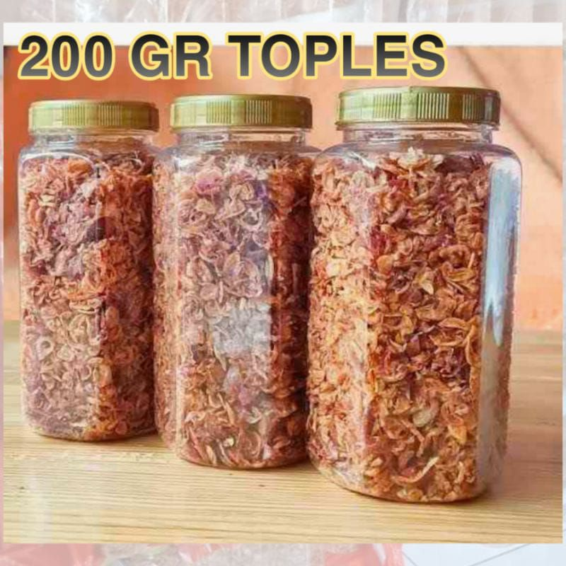
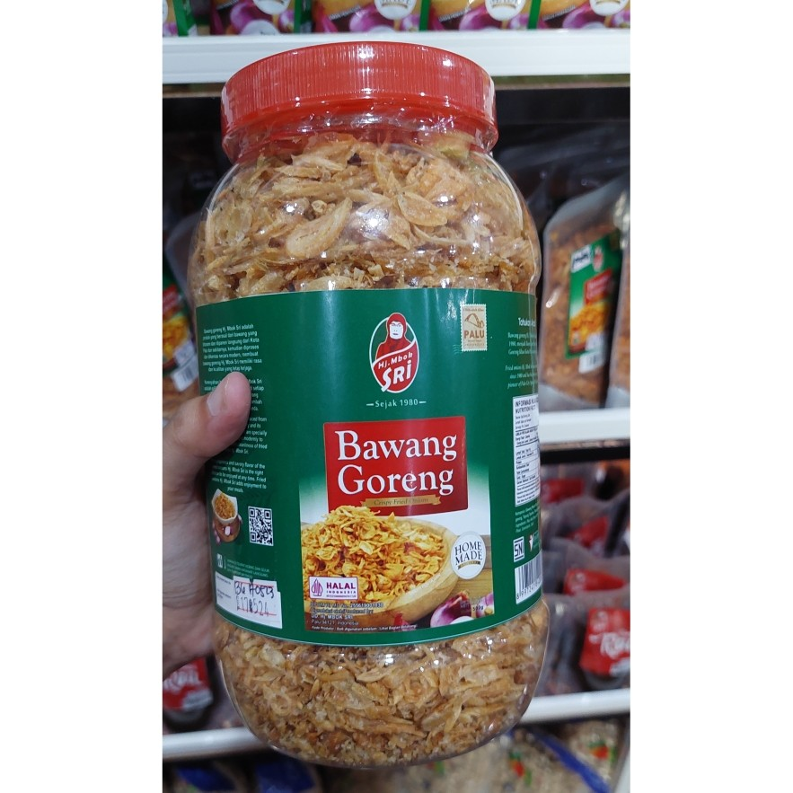
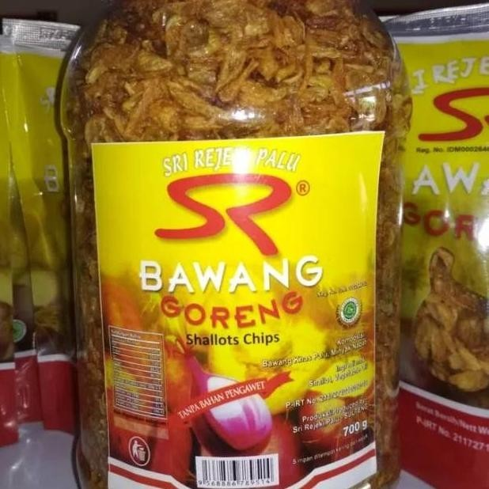

HALAMAN BERANDA

Bawang Goryeng merupakan sebuah bisnis kuliner yang menghasilkan bawang goreng berkualitas tinggi dengan rasa yang lezat dan tekstur yang renyah. Produk kami dibuat dengan menggunakan bawang pilihan yang dipotong tipis dan digoreng dengan minyak berkualitas tinggi, sehingga menghasilkan bawang goreng yang kaya akan aroma dan rasa yang autentik. Keunggulan utama dari bawang goreng kami adalah kerenyahannya yang tahan lama, sehingga cocok sebagai camilan yang enak dan sehat kapan pun dibutuhkan. Kami mengutamakan kualitas dalam setiap langkah produksi, mulai dari pemilihan bahan baku hingga proses pengemasan, untuk memastikan bahwa setiap kemasan bawang goreng "Ucup's Crunchy Onion" memberikan pengalaman rasa yang memuaskan bagi para pelanggan kami. Dengan komitmen kami terhadap kualitas dan kepuasan pelanggan, kami bertekad untuk menjadi pilihan utama bagi pecinta bawang goreng di seluruh negeri.
PRODUK KAMI

Banyak pilihan bawang goreng yang tersedia
| Paket |
Keterangan |
Contoh Produk |
Harga |
| Original |
Terbuat dari irisan tipis bawang merah yang digoreng kering tanpa bumbu tambahan,
memiliki rasa gurih alami bawang merah dan tekstur yang renyah. Cocok untuk taburan
berbagai hidangan seperti nasi goreng, soto, mie goreng, dan lain sebagainya, serta bisa
dinikmati sebagai camilan langsung. |
 |
Rp 25.000 |
| Udang Rebon |
Mirip dengan bawang goreng original, tetapi ditambahkan dengan udang rebon yang
digoreng bersama, memberikan rasa gurih dan aroma khas udang rebon yang kuat.
Cocok untuk taburan hidangan laut, sambal goreng ati, dan nasi goreng seafood,
menambah tekstur renyah dan rasa gurih yang lebih kompleks. |
 |
Rp 33.000 |
| Balado |
Bawang goreng original yang dicampur dengan cabai giling dan bumbu balado lainnya,
memberikan rasa pedas, gurih, dan sedikit asam khas masakan balado. Cocok untuk
taburan nasi putih, pelengkap ayam goreng, atau sebagai sambal, memberikan sensasi
pedas dan gurih yang berbeda dari bawang goreng biasa. |
 |
Rp 30.000 |
| Asin |
Bawang goreng original yang ditaburi dengan garam secukupnya, memberikan rasa
gurih yang lebih kuat dibandingkan bawang goreng original. Cocok untuk taburan nasi
putih, kerupuk, atau camilan langsung, menambah rasa gurih dan asin yang sederhana
namun lezat. |
|
Rp 30.000 |
| Custom |
Bawang goreng yang dibuat sesuai dengan selera dan keinginan pembeli, bisa
ditambahkan dengan berbagai bumbu, rempah, atau bahan lain sesuai permintaan,
seperti bawang goreng bawang putih, bawang goreng daun bawang, bawang goreng
teri, dan lain sebagainya. Memberikan variasi rasa dan tekstur yang unik sesuai dengan
selera individu. |
|
sesuai dengan pesanan |
CARA PEMESANAN
Pemesanan dapat dilakukan dengan cara menghubungi sosial media kami
DOKUMENTASI
berikut foto yang ada di usaha bawang goryeng :
Foto Produk
Produk bawang goreng terdiri dari 3 paket yaitu Biasa, Lumayan, dan Wow
.png)
.png)